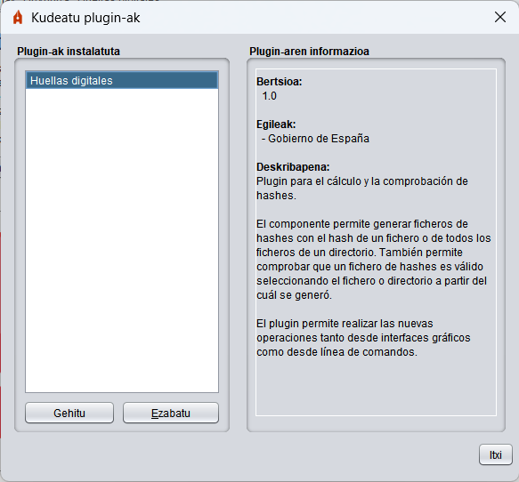

Autofirmak plugin-sistema erraz bat integratzen du, erabiltzaileek beraiek edo hirugarrenek garatutako plugin-ak beren sinadura-prozesuetan integratzeko aukera ematen duena. Plugin horiek aukera ematen dute sinatu aurretik datuen aurreprozesu bat, sinatu ondorengo postprozesu bat eta sinadura-prozesutik bereizitako hainbat eragiketa integratzeko, baina sarrera gisa izan ditzakete erabiltzaileak kargatutako datuak, sortutako sinadura, sinatzeko erabilitako ziurtagiriak edo sinaduretako ziurtagiriak. Prozesu horiek Autofirmaren interfazearen bidez egindako sinadura- eta sinadura-eragiketa masiboetan baino ez dute eragiten. Ez zaie aplikatzen web-nabigatzaile batetik edo komando-lerro baten bidez eskatutako sinadurei.
OHARRA: Lehen Autofirman integratutako funtzionalitate batzuk, hala nola hasheak kalkulatzea eta egiaztatzea, plugin gisa banatzen dira orain. Funtzio horiek Autofirmaren interfaze grafikotik atzitzeko, sistema eragilearen edo komando-lerroaren laster-menuak plugin horiek instalatu behar ditu.
Autofirman instalatutako plugin-ak kudeatzeko, sartu kudeaketa-panelera aplikazioaren menu-barrako "Tresnak" → "Kudeatu plugin-ak" aukeraren bidez. Panel honetatik pluginen informazioa instalatu, desinstalatu, konfiguratu eta kontsultatu ahal izango duzu.

Lauki honetan, gaur egun Autofirman instalatuta dauden pluginen zerrenda agertzen da. Zerrendaren beheko aldeko "Gehitu" botoia saka dezakezu plugin berri bat instalatzeko, edo "Ezabatu" botoia zerrendan hautatutako plugina desinstalatzeko. Pluginak instalatzeak eta desinstalatzeak berehalako eragina du. Zerrendako plugin bat hautatzean, haren informazioa agertuko da "Pluginaren informazioa" panelean.
Panel honetan, "Plugin instalatuak" zerrendan hautatutako pluginaren informazioa erakusten da. Informazio horrek pluginaren bertsio-zenbakia, egileak, harremanetarako informazioa eta deskribapena ditu. Datu horietako batzuk ezaba daitezke pluginak ez badu horien berri ematen.
Nahi izanez gero, pluginak aukera ematen badu, "Konfiguratu" botoia ager daiteke panelaren beheko aldean. Botoi honek pluginak berak definitutako konfigurazio-elkarrizketa irekitzen du. Plugin batek ez badu konfiguraziorik onartzen, ez da botoi hau agertuko.
Plugin-ek zenbait baimen defini ditzakete, eta hainbat zeregin egin, instalatzeko eta desinstalatzeko. Baliteke plugin batzuek eraginik ez izatea aplikazioa berrabiarazi arte.